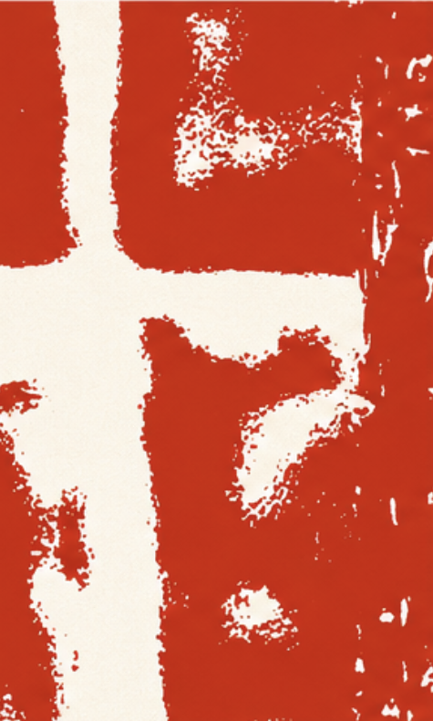
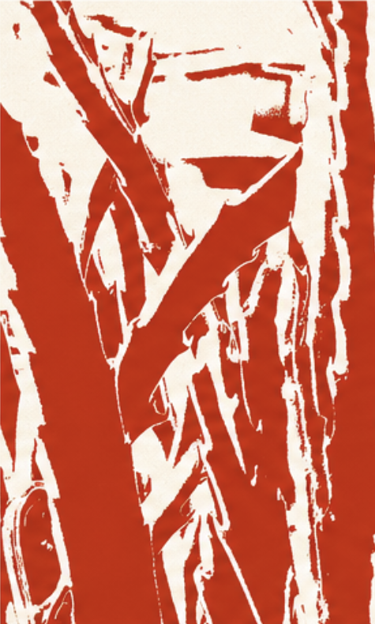
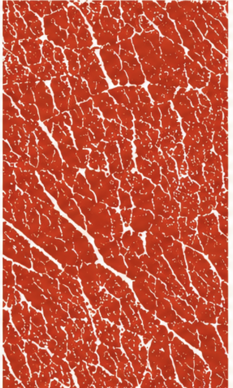
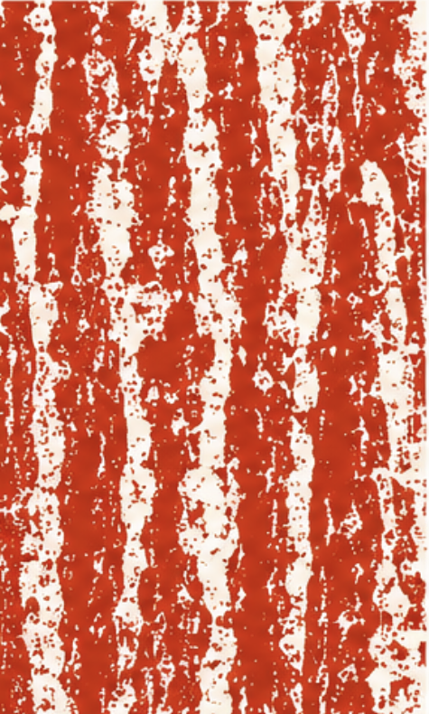
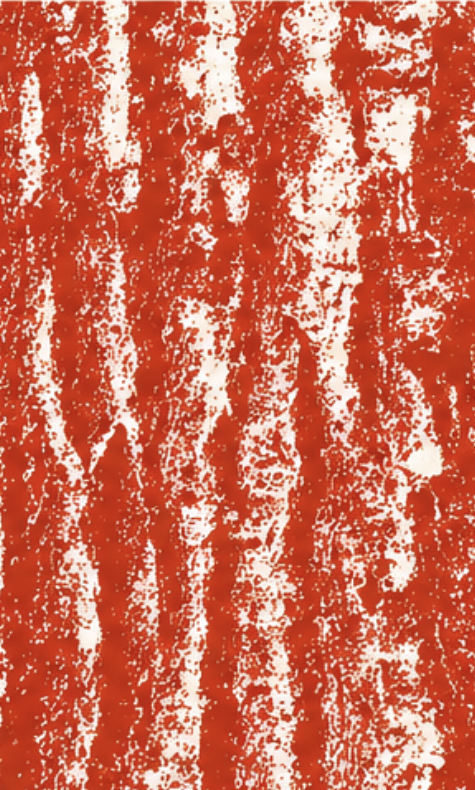
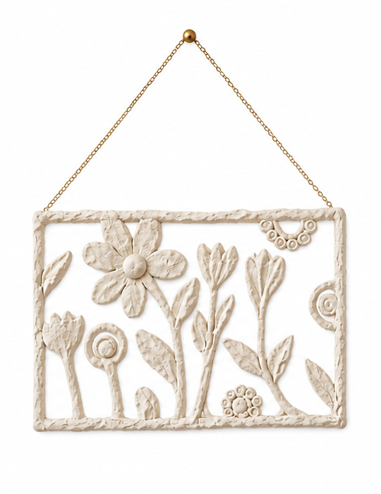
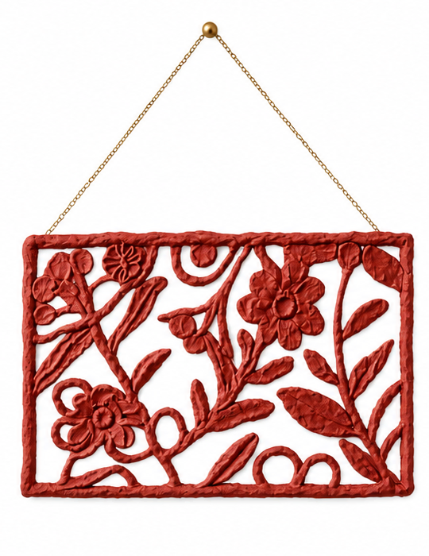
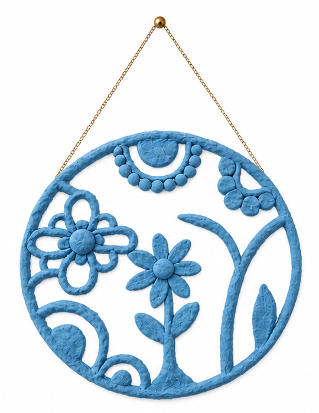

Projeler





Bir ağacın kabuğunda, kurumuş bir yaprağın yüzeyinde, taşın üzerinde ya da zamanın eskittiği bir duvarda… Her biri kendi ritmini taşıyan bu izler, gözlemlenip soyutlanarak dokulara dönüştürüldü.



Geri dönüştürülmüş kağıtların yeniden hayat bulmasıyla ortaya çıkan bu çalışmalar, doğanın formlarından ilham alınarak tamamen el işçiliğiyle üretilmiştir. Sergide yer alan çalışmalar, doğanın döngüsünü, üretimin yavaşlığını ve yeniden yaratmanın gücünü kutlayan birer iz olarak tasarlanmıştır.